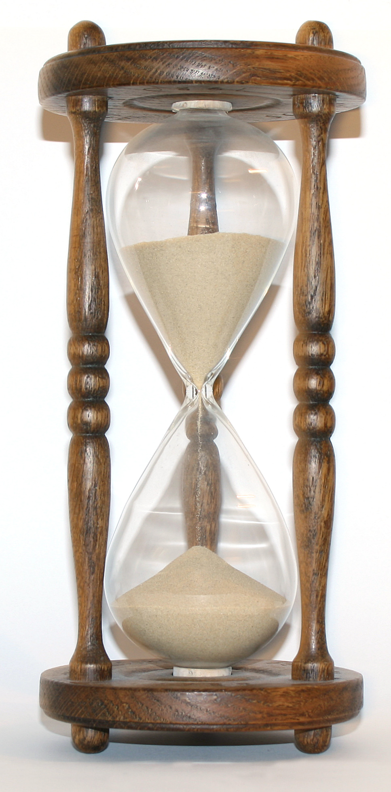

Our running study: do "natural / organic / local" labels tell shoppers the truth?
A reader who has never met your project has to find its parts fast.
A reader who has never met your project has to find its parts fast.
What and why. The question, and the gap that makes it worth asking.
How. What you looked at and how you looked at it, so someone could follow your path.
What you found. The findings themselves, reported plainly.
So what, and now what. What the findings mean, and what you recommend.
Mixing the two is the most common slip in a research report.

Why would a report be shaped like this?
A tip that rarely fails: the word "suggests" almost always points to the Discussion.
The abstract is a short summary of the whole report. Write it last, once you know what you actually said.
Your sources, in order. A study at this scale usually cites roughly 15 to 20.
Your instrument and raw data: the survey, the coding sheet, the full label set.
Headings, captioned figures, and white space are not decoration. They are how a reader gets in.
If it holds together out loud, and carries all four beats, your report has a spine.